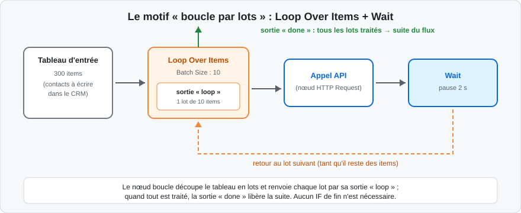
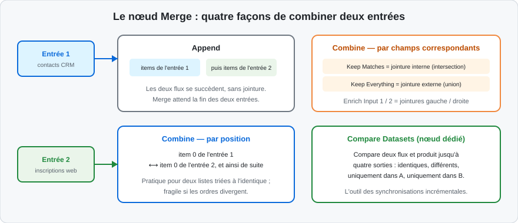
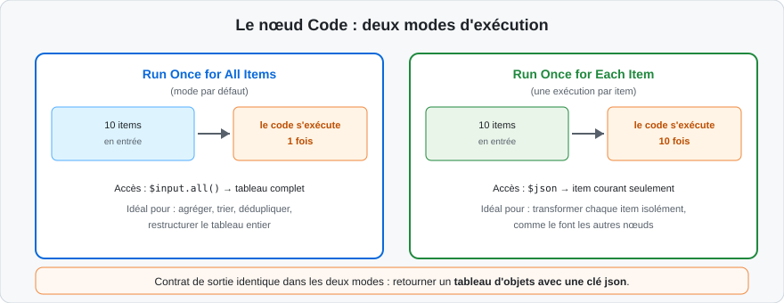
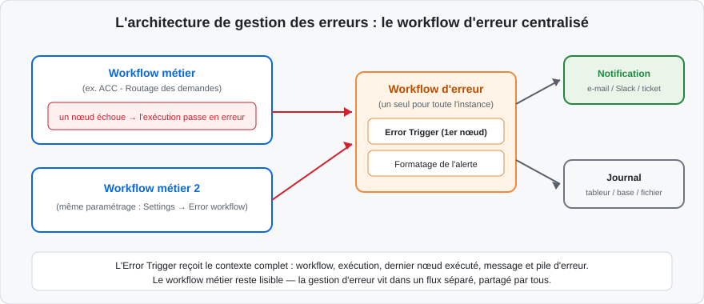

Ce qui change quand un workflow grandit
Les deux premières journées ont produit des flux linéaires ou simplement embranchés : un déclencheur, quelques transformations, une condition. Les processus réels de l'entreprise ajoutent trois exigences qui changent la donne :
-
les volumes : pas dix items de test, mais trois mille lignes à traiter sans saturer l'API cible ;
-
les cas particuliers : la règle principale couvre 80 % des dossiers, les 20 % restants exigent des chemins différents — et personne ne peut se permettre de les perdre ;
-
les pannes : une API injoignable à 3 h du matin ne doit ni stopper le flux définitivement, ni passer inaperçue.
Cette journée répond à ces trois exigences : le matin avec les constructions avancées (boucles, fusions, code), l'après-midi avec la fiabilité (erreurs, logs, alertes). Le fil rouge de l'atelier 4 — le routage des demandes — servira de terrain d'application : il fonctionne, il va maintenant devenir robuste.
La règle d'escalade de la complexité
n8n offre quatre niveaux de logique, du plus lisible au plus puissant :
- les nœuds dédiés (IF, Switch, Filter, Merge, Loop Over Items) ;
- les expressions courtes dans les paramètres ;
-
le nœud Code pour les traitements que ni les nœuds ni les expressions n'expriment lisiblement ;
-
le découpage en sous-workflows quand le graphe dépasse la douzaine de nœuds significatifs.
On ne monte d'un niveau que lorsque le niveau inférieur montre ses limites. Un nœud Code qui fait ce qu'un Edit Fields fait nativement est une dette de maintenance ; un canevas de quarante nœuds qui refuserait un sous-workflow est une bombe à retardement.
Cartographie des constructions du jour
Pour s'y retrouver dans la journée, chaque construction répond à un besoin précis — le tableau sert de pense-bête en atelier :
| Besoin | Construction | Section |
|---|---|---|
| Question à deux réponses | IF (conditions typées) | Conditions |
| Aiguillage nommé à N sorties | Switch (règles, fallback) | Conditions |
| Traiter par paquets espacés | Loop Over Items + Wait | Boucles |
| Répéter jusqu'à une condition | Boucle retour + IF borné | Boucles |
| Joindre deux sources sur une clé | Merge, Matching Fields | Fusion |
| Différencier deux états d'un stock | Compare Datasets | Fusion |
| Calcul multi-étapes | Nœud Code (deux modes) | Code |
| Absorber une panne passagère | Retry On Fail | Erreurs |
| Isoler un item fautif | Continue On Fail + branche | Erreurs |
| Alerter sur tout échec | Workflow d'erreur | Erreurs |
| Retrouver une exécution métier | Données personnalisées | Logs |
Lire un workflow complexe sans s'y perdre
Les ateliers de cette journée commencent souvent par l'ouverture d'un flux existant. La méthode de lecture, en quatre passages :
-
les déclencheurs d'abord : qu'est-ce qui met ce flux en marche, et à quelle fréquence ? C'est écrit à gauche du canevas ;
-
les sorties ensuite : qu'est-ce que ce flux produit — écritures, notifications, fichiers ? On part des extrémités droites ;
-
les nœuds de logique enfin : IF, Switch, Merge, boucles — ce sont eux qui racontent les règles métier ; chacun doit pouvoir être lu comme une question et ses réponses ;
-
l'historique pour vérifier : une exécution réelle ouverte dans Executions confirme ou corrige la lecture du canevas.
Un flux qui résiste à cette lecture en quatre passages a un problème de structure — et le remède est presque toujours le découpage en sous-workflows.
Au-delà du IF simple
Le chapitre 2 a posé les bases : IF pour une question binaire, Switch pour l'aiguillage multiple, Filter pour réduire. Trois motifs complétent la panoplie des flux avancés :
-
les conditions composées : plusieurs critères combinés en ET/OU dans un même nœud — par exemple « priorité haute ET (catégorie technique OU facturation) » ; attention, l'éditeur de conditions n8n combine les conditions avec un seul combinateur global : des mélanges ET/OU complexes se décomposent en deux nœuds successifs ou s'expriment dans une expression booléenne ;
-
la condition calculée : une expression booléenne unique qui résume une logique touffue, lisible si elle reste courte :
{{ $json.montant > 1000 && $json.client.fidele === true }}; -
le Switch en mode Expression : une expression qui calcule le numéro de sortie (
0,1,2…) — utile quand l'aiguillage dépend d'un score calculé plutôt que d'une égalité de champs.
Dans un Switch en mode règles, la première règle qui correspond l'emporte (sauf
option « all matching outputs »). Deux règles qui se recouvrent — montant >
100 puis montant > 1000 — n'ont pas le même effet selon leur ordre. La
règle la plus spécifique se place en premier, et le fallback capture le reste.
Le motif du routeur à deux étages
Quand l'aiguillage dépend de deux dimensions indépendantes — l'urgence et la catégorie — la tentation est de croiser toutes les combinaisons dans un Switch à six règles. Le motif plus lisible empile deux questions simples :
-
un premier nœud (IF) répond à la question qui change tout : « urgent ? » — les urgences partent vers leur chemin court ;
-
un Switch ne s'occupe que des non-urgents : catégorie technique, facturation, autre.
Le graphe reste lisible en diagonale, chaque nœud porte une seule question, et l'historique d'exécution raconte le raisonnement étape par étape. La règle générale : une dimension de décision par nœud.
Tester les branches : la discipline des jeux de données
Un aiguillage n'est livré que lorsque chaque sortie a été exercée avec un jeu de test réaliste :
-
la liste des cas de test se déduit des règles : un item par sortie attendue, plus un item « improbable » pour le fallback ;
-
en phase de construction, on épingle un tableau d'entrée qui contient tous ces cas, puis on vérifie les volumes affichés sur chaque connecteur de sortie ;
-
les cas limites (champ vide, valeur zéro, date égale au seuil exact) font partie du jeu — c'est là que vivent les erreurs de comparaison.
Cette discipline, appliquée à l'atelier 5 puis au fil rouge, est ce qui permet d'activer un workflow le vendredi soir sans crainte.
Le Switch en mode Expression : un exemple guidé
Le mode Expression du Switch calcule le numéro de sortie au lieu d'évaluer des règles. Cas typique : un score de priorité calculé en amont pilote l'aiguillage.
{{ $json.score >= 80 ? 0 : $json.score >= 50 ? 1 : 2 }}
Chaque valeur retournée (0, 1, 2) correspond à une sortie du nœud, dans l'ordre d'affichage. Deux précautions rendent ce mode supportable :
-
une note sur le nœud documente la correspondance chiffre → destination (
0 = prioritaires, 1 = standard, 2 = différé) ; -
le Fallback reste configuré : une expression qui retourne une valeur hors plage sans fallback perd l'item sans trace.
Quand le calcul tient en une ligne comme ici, le mode Expression est plus lisible que trois règles ; dès qu'il s'étoffe, les règles reprennent l'avantage.
L'ordre d'exécution des branches
Quand un flux se divise en plusieurs branches, n8n ne les exécute pas toutes en parallèle : il traite les branches l'une après l'autre, en commençant par la branche attachée à la connexion la plus anciennement créée (concrètement, celle dont le premier nœud a été connecté en premier). Chaque branche est menée à son terme — ou jusqu'à ce qu'elle n'ait plus d'items — avant que la suivante ne démarre.
Deux conséquences pratiques :
-
une branche lente retarde les suivantes ; ce n'est pas du parallélisme réel — la section sur la fusion montrera comment resynchroniser ;
-
l'ordre de création des connexions a un sens : pour le contrôler, on supprime et recrée une connexion, ou on accepte simplement que l'ordre soit transparent dans les logs d'exécution.
La boucle implicite : le défaut n8n
Le chapitre 1 l'a posé : chaque nœud traite les items un par un, sans boucle explicite. Cent contacts en entrée d'un nœud d'envoi produisent cent envois. Cette boucle implicite couvre la majorité des besoins — et elle a deux réglages méconnus :
-
Execute Once (onglet Settings d'un nœud) : le nœud ne s'exécute que pour le premier item — utile pour un nœud de notification qui ne doit pas envoyer cent messages ;
-
certains nœuds listent dans leur documentation des opérations qui ne bouclent pas (inserts en masse de certaines bases, nœud Code en mode « tous les items »…) : leur comportement prime sur la règle générale.
Boucle implicite ou explicite : décider en dix secondes
| Situation | Réponse |
|---|---|
| Traiter chaque item indépendamment, API qui encaisse | Boucle implicite (défaut) |
| Même chose, mais API à quota strict | Option Batching du nœud, ou Loop Over Items + Wait |
| Le traitement d'un lot dépend du résultat du lot précédent | Boucle conditionnelle (retour arrière + IF) |
| Pagination manuelle à curseur | Boucle conditionnelle bornée par un compteur |
| Un seul appel global quel que soit le nombre d'items | Execute Once dans les Settings du nœud |
La boucle explicite : Loop Over Items
Trois situations exigent une vraie boucle construite :
- respecter un quota d'API : traiter les items par paquets espacés ;
-
appeler une API qui n'accepte qu'un élément par requête tout en gardant le contrôle du rythme ;
-
récupérer un résultat par étape avant de passer à la suivante.
Le nœud Loop Over Items (ancien Split In Batches) découpe le tableau d'entrée en lots de taille paramétrable (Batch Size) et présente deux sorties : « loop », qui émet le lot courant vers le traitement, et « done », empruntée quand tous les lots sont écoulés.

Le schéma montre le motif canonique documenté : le tableau entre dans Loop Over Items ; chaque lot part vers le traitement (ici un appel API) ; un nœud Wait marque une pause ; la sortie du traitement revient à l'entrée de Loop Over Items, qui émet alors le lot suivant. La boucle s'arrête d'elle-même — aucun IF de fin n'est nécessaire — et la sortie « done » alimente la suite du flux.
Pour le seul cas « appeler une API item par item en douceur », l'option Batching du nœud HTTP Request (chapitre 2 : Items per Batch + Batch Interval) produit le même effet sans construire la boucle. Le motif Loop Over Items + Wait reste nécessaire quand le traitement du lot dépasse un seul appel, ou quand le nœud cible n'a pas d'option Batching.
La boucle conditionnelle : relier une sortie à l'amont
Pour répéter un traitement jusqu'à une condition — pagination manuelle, sondage d'un statut — on connecte la sortie d'un nœud à l'entrée d'un nœud précédent du flux, et un IF dans la boucle décide de la poursuite ou de la sortie.
Exemple classique, la pagination à curseur :
- HTTP Request appelle la page courante ;
- un Edit Fields extrait le curseur
nextde la réponse ; - un IF teste « le curseur existe-t-il ? » ;
- true → retour au HTTP Request avec le nouveau curseur ; false → sortie de boucle vers la suite.
Une boucle dont la condition de sortie ne se produit jamais tourne indéfiniment — et chaque tour appelle l'API réelle. On ajoute toujours un compteur de tours (un champ incrémenté dans la boucle) et une condition supplémentaire « nombre de tours < 100 » combinée en ET avec la condition métier. Une boucle infinie sur un workflow actif est un incident.
Le compteur de boucle, pas à pas
Concrètement, le garde-fou d'une boucle conditionnelle tient en trois lignes de logique :
- avant la boucle, un Edit Fields initialise
tours = 0; - dans la boucle, un Edit Fields calcule
tours = {{ Number($json.tours) + 1 }}; - l'IF de sortie combine : condition métier vraie ET
toursis less than100.
Le jour où l'API change de format et ne renvoie plus le curseur attendu, la boucle s'arrête au centième tour au lieu de frapper le service jusqu'à l'épuisement du quota — et le workflow d'erreur reçoit l'échec du centième appel, parfaitement identifiable.
Agréger après la boucle
La boucle émet les résultats par lots ; la suite du flux reçoit souvent besoin du tableau complet. Deux nœuds reconstituent l'ensemble :
-
Aggregate : regroupe tous les items reçus en un seul (liste, concaténation, comptage) ;
-
Merge en mode Append ou le nœud Code en mode « tous les items », quand il faut fusionner les lots avec une logique fine.
Le nœud Summarize, cousin d'Aggregate, produit les statistiques usuelles (somme, moyenne, comptage par catégorie) sans écrire de code.
Boucles imbriquées : la limite à ne pas franchir
Techniquement, rien n'interdit une boucle dans une boucle — parcourir des commandes, et pour chacune, boucler sur ses lignes. En pratique, la lisibilité du canevas s'effondre : les retours arrière se croisent, les volumes de chaque tour deviennent indécidables, et le moindre dépannage tourne à l'enquête.
L'alternative qui vieillit bien : la boucle interne part dans un sous-workflow appelé par Execute Workflow depuis la boucle externe. Chaque niveau garde son propre journal d'exécution, se teste isolément, et le canevas principal reste dégagé. C'est la même règle que celle du chapitre 2 : une zone qui mérite un titre mérite son workflow.
Summarize : les statistiques sans code
Le nœud Summarize mérite un arrêt : il concentre les quatre opérations de reporting les plus demandées :
| Opération | Résultat |
|---|---|
| Count | Nombre d'items, globalement ou par catégorie |
| Sum / Average | Total ou moyenne d'un champ numérique |
| Min / Max | Les extrêmes d'un champ (dates, montants) |
| Concatenate | La liste des valeurs d'un champ en une chaîne |
Combiné à un Split Out préalable sur la catégorie de regroupement, il produit en deux nœuds le tableau de bord que beaucoup écriraient en cinquante lignes de code — le rapport de l'atelier 5 s'appuie exactement sur cette combinaison.
Branches parallèles : un rappel
Le chapitre 1 a montré qu'un nœud peut alimenter plusieurs branches, chacune partant d'une copie des mêmes items. Les branches s'exécutent séquentiellement mais sont logiquement parallèles : chacune voit les données d'entrée, aucune ne voit le résultat des autres.
Ce motif répond à des besoins quotidiens : envoyer un e-mail et écrire dans le CRM et archiver — trois effets de bord indépendants du même événement.
Le nœud Merge attend la fin de toutes ses entrées. Si l'une des branches amont se retrouve avec zéro item — un Filter trop strict, une condition qui n'a rien laissé passer — cette branche ne s'exécute pas, et le Merge reste muet : le flux semble « s'arrêter avant la fin ». La parade est le réglage Always Output Data sur le dernier nœud de la branche concernée, ou le choix d'un mode de fusion tolérant l'absence. Ce comportement est la première chose à vérifier quand un workflow « s'arrête au milieu ».
Resynchroniser : le nœud Merge
Quand les branches doivent se rejoindre — comparer leurs résultats, construire une réponse qui agrège les deux — le nœud Merge attend que toutes ses entrées aient terminé, puis combine leurs items selon le mode choisi :

| Mode | Effet | Cas d'usage |
|---|---|---|
| Append | Concatene les items des entrées, l'une après l'autre | Deux sources de prospects à traiter ensemble |
| Combine — Matching Fields | Jointure sur la valeur d'un champ : Keep Matches (interne), Keep Everything (externe), Enrich Input 1/2 (gauche/droite), Keep Non-Matches | Enrichir des commandes avec les fiches clients |
| Combine — Position | Apparie les items par leur rang (0 avec 0, 1 avec 1…) | Deux listes alignées produites par le même découpage |
| Combine — All Possible Combinations | Produit cartesien des deux entrées | Générer toutes les variantes (produit × déclinaison) |
| SQL Query | Jointure libre exprimée en SQL (mode avancé) | Requêtes multi-conditions sur les deux flux |
Apparier les items par rang suppose que les deux entrées ont le même nombre d'items, dans le même ordre. Un tri différent ou un item filtré en amont décale tous les couples suivants. La jointure par champ correspondant (Matching Fields) est presque toujours la bonne réponse — la position se réserve aux cas où aucune clé commune n'existe et où l'ordre est garanti.
Exemple complet : enrichir des commandes avec leurs clients
Le cas d'école de la jointure, pas à pas. La boutique livre des commandes avec
un client_id ; le CRM livre des fiches clients avec un identifiant. Objectif
: les commandes enrichies du nom et de l'e-mail du client.
-
les deux sources sont lues en parallèle (deux branches depuis le déclencheur) ;
-
chaque branche normalise sa clé : un Edit Fields côté boutique produit
cle_client = {{ $json.client_id }}, un Edit Fields côté CRM produitcle_client = {{ $json.identifiant }}— la jointure exige des champs de même nom dans les deux entrées ; -
le nœud Merge en mode Combine — Matching Fields, option Enrich Input 1, champ
cle_client, garde toutes les commandes et y ajoute les données clients correspondantes ; -
les commandes sans client correspondant traversent quand même (c'est le sens de « Enrich » par rapport à « Keep Matches »), avec des champs clients vides — qu'un IF en aval détecte et route vers la file d'exceptions.
Ce motif — normaliser les clés, puis jointure — est la moitié des synchronisations réelles. L'autre moitié est Compare Datasets.
Comparer avant de fusionner : Compare Datasets
Pour les synchronisations, la question n'est pas « fusionner » mais « qu'est-ce qui a changé ? ». Le nœud Compare Datasets reçoit deux flux — typiquement « état de la source » et « état de la cible » — et produit jusqu'à quatre sorties : items identiques, items différents, items seulement dans A, items seulement dans B.
Chaque sortie alimente son traitement : les différents partent en mise à jour, les « seulement dans A » en création, les « seulement dans B » en suppression ou archivage. C'est le squelette standard d'une synchronisation incrémentale, bien plus sûr que l'écrasement systématique.
Au-delà de la lecture de champ
Le chapitre 1 a posé la syntaxe ({{ $json.champ }}) ; les flux avancés
demandent des expressions qui calculent. Le référentiel complet vit dans la
documentation officielle (annexe Ressources) ; voici les formes qui couvrent
l'essentiel des besoins.
L'opérateur ternaire : le IF d'une ligne
{{ $json.montant > 1000 ? "Grand compte" : "Standard" }}
Il remplace un nœud IF quand la condition ne sert qu'à produire une valeur, pas à aiguiller le flux. Au-delà d'une imbrication, on préfère le Switch ou le nœud Code — la lisibilité prime.
Les méthodes de tableaux : map, filter, reduce
Les trois méthodes JavaScript qui transforment les données en profondeur :
{{ $json.lignes.map(l => l.prix * l.quantite) }}
produit le tableau des montants par ligne de commande ;
{{ $json.lignes.filter(l => l.stock > 0).map(l => l.reference) }}
enchaîne filtrage et projection — d'abord les lignes en stock, puis leurs références ;
{{ $json.lignes.reduce((total, l) => total + l.prix * l.quantite, 0) }}
cumule un total. Le dernier argument (0) est la valeur initiale : l'oublier
sur un tableau vide lève une erreur — piège classique.
Interroger le JSON avec JMESPath
Pour les structures profondément imbriquées, n8n embarque la bibliothèque
JMESPath via la méthode $jmespath() :
{{ $jmespath($json, "items[?prix > `100`].reference") }}
extrait en une expression les références des articles dont le prix dépasse 100.
JMESPath exprime en une chaîne ce qui demanderait une chaîne
filter().map() — pratique pour les réponses d'API volumineuses, au prix d'une
syntaxe spécifique à apprendre.
Les dates avec Luxon
Les dates manipulées par $now et $today sont des objets Luxon, la
bibliothèque de dates de n8n. Les opérations courantes :
| Besoin | Expression |
|---|---|
| Formater | {{ $now.toFormat('dd/MM/yyyy HH:mm') }} |
| Ajouter 7 jours | {{ $now.plus({ days: 7 }) }} |
| Début du mois | {{ $now.startOf('month') }} |
| Comparer | {{ $json.echeance < $now }} |
| Parser une chaîne ISO | {{ $json.date.toISO() }} après conversion Date & Time |
Une date reçue d'une API est une chaîne de caractères ("2026-03-12"),
pas un objet date. La comparer directement à $now compare une chaîne à un
objet — résultat faux ou imprévisible. On convertit d'abord, avec le nœud
Date & Time ou DateTime.fromISO() dans une expression.
Références inter-nœuds : pêcher dans l'amont
Le chapitre 1 a introduit $node["Nom"].json.champ ; les flux ramifiés exigent
des formes plus précises :
| Expression | Contenu |
|---|---|
{{ $('Récupérer les commandes').item.json }} |
L'item lié au courant, produit par un nœud nommé en amont |
{{ $('Webhook').first().json.body }} |
Le premier item d'un nœud amont, quelle que soit la position |
{{ $('Webhook').last().json }} |
Le dernier item de ce nœud |
{{ $('Liste complète').all() }} |
Tous les items d'un nœud amont (tableau) |
{{ $items('Nom du nœud') }} |
Variante fonctionnelle équivalente |
La référence par nom est la façon propre de reprendre une donnée d'amont après un détour : après un Merge qui a perdu un champ, après une branche qui a transformé la structure. Le prix à payer : l'expression casse si le nœud est renommé — d'où la règle du chapitre 1, nommer les nœuds tôt et ne plus y toucher.
Garder les expressions courtes
Une expression tient sur une ligne et se lit à voix haute. Au-delà, le nœud
Code reprend la main. Ce n'est pas une question de possibilité technique —
l'expression accepterait dix lignes — mais de relecture : l'expression est
cachée dans un paramètre, le code du nœud Code a droit à un écran entier, des
commentaires et des console.log.
Construire des objets à la volée
Les expressions produisent aussi des structures complètes, utiles pour composer un corps de requête ou normaliser un item :
{{ { "client": { "nom": $json.nom, "email": $json.email.toLowerCase() }, "meta": { "source": "boutique", "importe_le": $now.toISO() } } }}
Trois syntaxes de construction à reconnaître :
| Forme | Rôle | Exemple |
|---|---|---|
| Objet littéral | Structurer des champs | {{ { cle: $json.id } }} |
| Tableau littéral | Assembler une liste | {{ [$json.a, $json.b] }} |
| Décomposition (spread) | Copier un objet en le modifiant | {{ { ...$json, traite: true } }} |
Le spread { ...$json, traite: true } est le motif le plus utile : il conserve
tous les champs existants et en ajoute un — l'équivalent expression d'un Edit
Fields en mode « conserver les champs d'entrée ».
La porte de sortie du tout-visuel
Le nœud Code exécute du JavaScript (ou du Python, selon la version et la configuration de l'instance) comme une étape du flux. C'est la réponse aux traitements que les nœuds dédiés n'expriment pas : restructuration fine d'un JSON, déduplication à clé composée, calcul métier touffu.

Les deux modes, le même contrat
-
Run Once for All Items (défaut) : le code tourne une fois, avec accès au tableau complet via
$input.all()— pour agréger, trier, restructurer ; -
Run Once for Each Item : le code tourne une fois par item, avec accès à l'item courant via
$json— pour transformer chaque item isolement.
Dans les deux cas, la sortie obéit au contrat n8n : un tableau d'objets
portant chacun une clé json :
// Mode "Run Once for All Items" : garder les clients actifs et calculer leur CA
const clients = $input.all();
return clients
.filter(item => item.json.actif === true)
.map(item => ({
json: {
nom: item.json.nom,
ca: item.json.commandes.reduce((t, c) => t + c.montant, 0)
}
}));
En mode « Each Item », le retour est l'objet de l'item lui-même
(return { json: { ... } }), n8n l'enveloppe dans le tableau.
Retourner un objet brut, une chaîne ou un tableau d'objets sans clé json
déclenche l'erreur « items must be returned as an array of objects » — la
plus fréquente des erreurs de nœud Code. Le contrat est absolu : un tableau,
des objets, une clé json sur chacun.
Ce que le nœud Code ne fait pas
Le bac à sable d'exécution interdit deux choses : l'accès au système de fichiers et les appels réseau directs. Lire un fichier se fait avec le nœud Read/Write Files from Disk ; appeler une API, avec le nœud HTTP Request. Sur instance auto-hébergée, l'import de modules npm externes est possible après activation explicite (variable d'environnement dédiée) — une décision d'exploitation, pas un réflexe de développement.
Item linking : préserver la traçabilité
Quand le nombre d'items change entre l'entrée et la sortie du nœud Code —
regroupement, éclatement — n8n ne peut plus deviner quel item de sortie descend
de quel item d'entrée. Cette information, le lien d'item (pairedItem),
alimente la navigation visuelle dans les exécutions et les références
$('Nœud').item.
Le nœud Code permet de le maintenir explicitement :
// Mode Each Item : la correspondance est automatique
return { json: { ...$json, traite: true } };
// Mode All Items, éclatement : on déclare la parenté
return lignes.map(l => ({
json: l,
pairedItem: { item: indexDeLItemParent }
}));
Sans cette déclaration, le flux fonctionne — mais le suivi visuel « cet item
vient de celui-là » est perdu, et $('Nœud amont').item ne sait plus quelle
ligne choisir. Sur les nœuds Code qui regroupent ou éclatent, cinq secondes de
pairedItem économisent des heures de diagnostic.
Code ou expression : la frontière
| Situation | Outil |
|---|---|
| Lire ou formater un champ | Expression courte |
| Composer 2-3 champs, un ternaire simple | Expression |
| Transformer un tableau imbriqué | Expression map/filter ou JMESPath |
| Logique multi-étapes, boucles, conditions imbriquées | Nœud Code |
| Agrégation du tableau complet (totaux, dédoublonnage fin) | Nœud Code, mode All Items |
Déboguer le nœud Code
console.log() écrit dans la console du navigateur lors des exécutions
manuelles — l'outil de mise au point par excellence pendant l'atelier. En
production, les logs passent côté serveur ; la supervision des exécutions, vue
plus loin, prend le relais.
Un exemple complet, commenté ligne à ligne
Le besoin : une liste de commandes arrive avec des doublons possibles sur la référence ; on veut un item par référence, avec le montant cumulé et la liste des lignes concernées.
// Mode : Run Once for All Items
const commandes = $input.all(); // le tableau complet d'entrée
const parReference = {}; // accumulateur : référence -> agrégat
for (const item of commandes) {
const ref = item.json.reference; // la clé de regroupement
if (!parReference[ref]) {
parReference[ref] = { // première occurrence : on initialise
reference: ref,
total: 0,
lignes: []
};
}
parReference[ref].total += Number(item.json.montant); // cumul
parReference[ref].lignes.push(item.json.ligne); // trace
}
// Contrat de sortie : tableau d'objets avec une clé json
return Object.values(parReference).map(c => ({ json: c }));
Trois points à relire dans ce code : l'entrée se prend avec $input.all() ; le
regroupement vit dans un objet indexé par la clé ; la sortie respecte le contrat
{ json: ... }. C'est le squelette de 80 % des nœuds Code d'agrégation.
Les variables et méthodes intégrées utiles
Au-delà de $input et $json, le nœud Code expose l'essentiel du contexte :
| Variable / méthode | Contenu |
|---|---|
$input.all() / $input.item |
Les items d'entrée (mode All) / l'item courant (mode Each) |
$('Nom du nœud').all() |
Les items produits par un nœud amont |
$workflow.name, $workflow.id |
Identité du workflow courant |
$execution.id |
L'identifiant de l'exécution — utile pour les traces |
$now, $today |
Les objets date Luxon |
$vars.nom_variable |
Les variables personnalisées de l'instance (selon édition) |
$jmespath(data, "requête") |
Une requête JMESPath sur une structure JSON |
console.log(...) |
Trace dans la console du navigateur (exécution manuelle) |
Quatre familles de pannes
Avant de fiabiliser, il faut nommer ce qui échoue. Les erreurs d'un workflow n8n tombent dans quatre familles, qui n'appellent pas la même réponse :
| Famille | Exemple | Bonne réponse |
|---|---|---|
| Erreur de configuration | Credential expiré, champ obligatoire vide | Corriger une fois, définitivement — aucune relance automatique ne réparera |
| Erreur transitoire | API injoignable, 429, 503, timeout |
Réessayer après une pause (Retry On Fail) |
| Erreur de données | Champ manquant, format inattendu | Valider en amont, aiguiller vers une file d'exceptions |
| Erreur métier | Commande sans client connu, montant négatif | Stop and Error explicite ou branche de rejet tracée |
Où les erreurs se manifestent
Une exécution en échec est visible à trois endroits : le nœud fautif passe au rouge sur le canevas (en test), l'exécution est marquée Error dans l'historique, et le workflow d'erreur — s'il est configuré — se déclenche.
La lecture d'une erreur suit un rituel : ouvrir l'exécution, identifier le dernier nœud exécuté, lire le message d'erreur dans sa sortie, et remonter la chaîne des données si la cause est en amont (un champ absent trois nœuds plus tôt).
Lire un message d'erreur sans paniquer
Les messages d'erreur n8n empilent trois informations, dans l'ordre :
-
ce qui a échoué — le type d'erreur (
NodeApiError,NodeOperationError, erreur JavaScript brute du nœud Code) ; -
pourquoi — le message remonté par le service ou par le nœud (
401 Unauthorized,Cannot read properties of undefined) ; -
où — le nœud fautif et, pour les appels HTTP, le code de statut.
Quelques traductions immédiates :
| Message | Signification réelle |
|---|---|
Cannot read properties of undefined (reading 'x') |
Un champ parent (x) n'existe pas dans les données — expression écrite pour une structure différente |
401 Unauthorized |
Credential absente, expirée, ou mal préfixée (Bearer oublié) |
403 Forbidden |
Authentifié mais sans la permission — scope OAuth2 manquant |
429 Too Many Requests |
Quota de l'API atteint — tempo ou batching à régler |
ETIMEDOUT / ECONNREFUSED |
Le service est injoignable : panne, mauvaise URL, ou flux sortant bloqué par le réseau |
JSON parameter needs to be valid JSON |
Le corps d'une requête contient une expression qui a produit du texte non JSON |
Le cas particulier des erreurs de déclencheur
Une erreur survenue dans le déclencheur — credential morte au moment où le
déclencheur d'application interroge son service — empêche l'exécution de
commencer : elle n'apparaît pas dans l'historique des exécutions du workflow.
Le workflow d'erreur la reçoit néanmoins, avec une structure de données
différente (un objet trigger au lieu de l'objet execution détaillé). Les
alertes construites à l'atelier tiendront compte des deux formes.
Les erreurs de ressources : mémoire et temps
Deux échecs ne viennent ni des API ni des données, mais de l'instance elle-même :
-
le dépassement de mémoire : un tableau de dizaines de milliers d'items avec des champs volumineux (textes longs, images encodées) épuise la mémoire du processus ; la parade est le traitement par lots — la boucle de ce chapitre — et le stockage externe des binaires, vu au chapitre 4 ;
-
le timeout d'exécution : une exécution qui dépasse la durée maximale configurée est interrompue ; les workflows de masse se conçoivent pour tenir dans cette enveloppe, ou se découpent en sous-traitements chaînés.
Ces erreurs se diagnostiquent dans les journaux de l'instance autant que dans l'historique — le chapitre 4 y reviendra avec le dimensionnement.
Premier niveau : le nœud qui encaisse
Chaque nœud possède, dans son onglet Settings, deux amortisseurs :
-
Retry On Fail : réessaie automatiquement — nombre de tentatives et intervalle paramétrables. La réponse juste aux erreurs transitoires (
429,503, timeout réseau) ; -
Continue On Fail : au lieu de faire échouer l'exécution, le nœud émet un item d'erreur et le flux continue. Le nœud offre trois comportements : la sortie d'erreur dans le flux principal, la sortie d'erreur dédiée (une branche rouge séparée sur le canevas), ou l'arrêt classique.
La sortie d'erreur dédiée mérite d'être connue : elle transforme le nœud en aiguillage succès/échec, la branche d'échec recevant l'item fautif avec le message d'erreur — parfait pour alimenter une file d'exceptions sans stopper les 299 autres items.
Un nœud en Continue On Fail qui n'est suivi d'aucun traitement de son item d'erreur produit un flux « vert » qui n'a rien fait : la pire configuration possible. Continue On Fail s'accompagne toujours d'une branche ou d'un test qui traite le cas d'échec — log, alerte, mise de côté.
Deuxième niveau : le workflow d'erreur
Pour les échecs qui doivent stopper le flux — et être signalés — n8n affecte à chaque workflow un workflow d'erreur, déclaré dans ses Settings. Ce workflow commence obligatoirement par un nœud Error Trigger et s'exécute à chaque échec de l'exécution principale.
Construire le workflow d'erreur, pas à pas
La mise en place tient en cinq gestes, reproduits à l'atelier :
- créer un nouveau workflow dont le premier nœud est Error Trigger ;
-
le nommer clairement —
SYS - Alertes erreurs— et le sauvegarder (il peut rester inactif : c'est son rôle de workflow d'erreur qui le déclenche) ; -
construire la chaîne d'alerte : formatage du message, puis notification (e-mail, messagerie d'équipe, ticket) ;
-
dans chaque workflow métier, ouvrir Settings → Error workflow et sélectionner ce workflow d'alerte ;
-
provoquer un échec de test (URL invalide, Stop and Error) et vérifier la réception de l'alerte.
Le point 4 est celui que tout le monde oublie la première fois : le workflow d'erreur n'est pas magiquement global, il est rattaché workflow par workflow — d'où l'intérêt d'en faire une ligne de la liste de contrôle d'activation du chapitre 2.

Le schéma illustre l'architecture recommandée : un seul workflow d'erreur partagé par tous les flux métier de l'instance. L'Error Trigger y reçoit le contexte complet :
{
"execution": {
"id": "231",
"url": "https://n8n.exemple.fr/execution/231",
"error": { "message": "...", "stack": "..." },
"lastNodeExecuted": "Envoyer le résumé",
"mode": "trigger"
},
"workflow": { "id": "12", "name": "ACC - Routage des demandes" }
}
Un Edit Fields y formate l'alerte (nom du workflow, nœud fautif, message, lien
direct vers l'exécution grâce à execution.url), puis un nœud de notification
l'envoie — e-mail, Slack, ouverture de ticket. Un même workflow d'erreur sert à
tous les flux : c'est le point unique de supervision de l'instance.
Troisième niveau : l'échec volontaire avec Stop and Error
Certaines situations doivent échouer délibérément : une donnée critique absente, une incohérence métier. Le nœud Stop and Error fait échouer l'exécution avec un message choisi — qui remonte au workflow d'erreur comme n'importe quelle panne, mais avec un message explicite : « Commande CMD-0481 sans client connu — intervention requise » plutôt qu'une erreur technique sibylline trois nœuds plus loin.
Ce que le workflow d'erreur ne doit jamais faire
Le workflow d'erreur est lui-même un workflow : il peut échouer. Trois règles le gardent fiable :
-
il reste minimal : formatage + notification, jamais de logique métier — un workflow d'erreur qui appelle trois API fragiles devient une source d'erreurs au carré ;
-
il ne dépend d'aucun service non critique : si la messagerie est en panne en même temps que le workflow métier, l'alerte tombe dans le vide — prévoir un second canal sobre (écriture dans un fichier/tableur local) en dernier ressort ;
-
il n'a pas lui-même de workflow d'erreur qui le rappelle : une boucle d'alertes auto-entretenue est le pire des réveils nocturnes.
Une automatisation fiable empile les trois niveaux dans l'ordre : Retry On Fail absorbe le transitoire, les branches d'erreur (Continue On Fail) isolent les échecs d'items sans stopper le lot, et le workflow d'erreur signale tout ce qui passe au travers. Stop and Error, enfin, rend les échecs métier visibles au lieu de les laisser pourrir les données en silence.
Matrice de décision : quelle défense pour quelle erreur
| Situation détectée | Mécanisme |
|---|---|
| API injoignable par intermittence | Retry On Fail (3 tentatives espacées) |
| Un item sur 300 est malformé | Continue On Fail + branche d'exception |
| La panne doit stopper le flux et alerter | Défaut (échec) + workflow d'erreur |
| Une donnée critique est absente | Stop and Error avec message explicite |
| L'erreur est attendue et sans conséquence | Continue On Fail + filtre silencieux |
| Le déclencheur lui-même peut tomber | Workflow d'erreur (structure trigger gérée) |
La question à se poser pour chaque nœud à risque est toujours la même : « si ce nœud échoue à 3 h du matin, que doit-il se passer ? » — réessayer, contourner, arrêter en alertant. Ne rien régler, c'est choisir « arrêter sans alerter ».
Jusqu'ici dans la journée, les erreurs ont été subies ; cette section les met en régime. Trois outils se complètent : l'historique qui raconte ce qui s'est passé, les journaux de l'instance qui racontent ce qui se passe, et les alertes qui préviennent avant que quelqu'un ne s'en aperçoive. La fiabilité d'une automatisation ne se mesure pas à l'absence de pannes — il y en aura — mais au délai entre la panne et sa prise en charge.
L'historique des exécutions, outil de diagnostic central
Le chapitre 1 a présenté la page Executions ; en exploitation, elle devient le tableau de bord quotidien. Trois gestes de diagnostic :
-
filtrer par statut (Error) et par workflow pour isoler les échecs de la nuit ;
-
ouvrir l'exécution fautive et parcourir les nœuds : chacun montre ses données d'entrée et de sortie figées au moment de l'exécution ;
-
recharger les données d'une exécution passée dans l'éditeur (debug execution) pour reproduire le problème en mode test, sans rejouer le déclencheur réel.
Lire une exécution pas à pas
Face à une exécution en échec, la procédure qui ne rate pas :
-
repérer le premier nœud rouge — les suivants ne sont souvent que des victimes collatérales ;
-
lire son message d'erreur, puis sa vue INPUT : la cause est souvent dans les données reçues, pas dans le nœud ;
-
remonter le chaînage des items (paired items) jusqu'à l'origine de la donnée fautive ;
-
décider : correction des données (cas isolé), correction du flux (cas récurrent), ou renforcement d'une validation amont (cas structurel).
Ce dernier tri — corriger la donnée, le flux, ou le contrat d'entrée — est la compétence qui distingue un dépannage d'un emplâtrement : corriger la donnée à la main laisse le défaut se reproduire demain.
Rendre les exécutions cherchables : les données personnalisées
Le nœud Execution Data (ou l'écriture de données personnalisées depuis le nœud Code) attache des étiquettes métier à l'exécution — numéro de commande, identifiant client. L'historique peut alors être filtré sur ces valeurs : retrouver « l'exécution de la commande CMD-0481 » parmi dix mille devient immédiat. C'est la différence entre un historique technique et un outil de support.
Du journal interne à la supervision externe
L'instance produit par ailleurs ses propres journaux techniques (logs du conteneur, niveau configurable par variable d'environnement) et peut exposer des métriques (endpoint Prometheus) ou diffuser ses journaux d'événements vers un système externe (log streaming). Ces mécanismes d'exploitation seront branchés au chapitre 4, dans la partie déploiement ; l'essentiel au quotidien reste le couple historique d'exécutions + workflow d'erreur.
Concevoir une alerte utile
Une alerte qui se contente de dire « erreur » fait pire que son absence : elle habitue à ne pas lire. Une alerte utile contient toujours :
- le workflow concerné et le nœud fautif ;
- le message d'erreur brut ;
- la donnée en cause (identifiant métier) ;
- le lien direct vers l'exécution (
execution.url) ; - une gravité : transitoire absorbée par retry (information) ou échec définitif (action requise).
La rétention des exécutions : le ménage à prévoir
Chaque exécution enregistre les données de chaque nœud : sur une instance active,
l'historique gonfle vite — et avec lui la base de données. L'instance se
configure pour purger automatiquement au-delà d'une durée ou d'un volume (les
réglages exacts, variables d'environnement EXECUTIONS_DATA_*, sont détaillés au
chapitre 4). Trois principes suffisent pour ce chapitre :
-
l'historique sert au diagnostic récent, pas à l'audit : ce qui doit être conservé durablement part vers un vrai stockage (base, tableur d'audit) ;
-
les workflows qui brassent des données sensibles méritent une rétention courte, voire l'exclusion de leurs données d'exécution de la sauvegarde ;
-
une instance qui ralentit sans raison apparente a souvent simplement un historique jamais purgé.
Ce qui change entre le test et la production
| Aspect | Exécution manuelle (test) | Exécution automatique (workflow actif) |
|---|---|---|
| Déclenchement | Bouton de l'éditeur | Déclencheurs réels |
| Données visibles | Toujours, dans l'éditeur | Dans l'historique Executions |
| Workflow d'erreur | Ne se déclenche pas par défaut en test manuel | Se déclenche à chaque échec |
| Impact sur les quotas d'API | Réel (les appels partent vraiment) | Réel |
La dernière ligne mérite d'être relue : un test d'écriture part bel et bien vers le service réel — d'où l'écho httpbin utilisé dans tous les ateliers.
Construire la synchronisation complète « utilisateurs et publications » d'une API publique : boucle par lots avec tempo, enrichissement par jointure, aiguillage multi-critères, agrégation finale. Durée indicative : 2 h 30. L'atelier réutilise JSONPlaceholder (aucune authentification) et les données épinglées dès que possible.
Étape 0 — Préparer le terrain
-
Vérifier l'accès à l'API de test depuis un navigateur :
https://jsonplaceholder.typicode.com/usersdoit afficher dix objets JSON. -
Créer le workflow vide et poser immédiatement la sticky note d'en-tête : objectif, sources, décisions d'aiguillage attendues.
-
Convenir en binôme du nommage des nœuds avant de poser le premier.
Le scénario
Le service marketing veut un rapport quotidien sur les auteurs de démonstration : pour chaque utilisateur de l'API, compter ses publications, classer les auteurs en trois catégories d'activité, et produire un résumé agrégé. Les appels à l'API doivent être espacés pour respecter son quota.
Étape 1 — Préparer les deux sources
- Créer le workflow
MKT - Rapport d'activité des auteurs. -
Nœud HTTP Request
Listar les auteurs: GEThttps://jsonplaceholder.typicode.com/users— 10 items attendus. Épingler. -
Nœud HTTP Request
Lister les publications: GEThttps://jsonplaceholder.typicode.com/posts— 100 items attendus. Épingler.
Étape 2 — Boucler avec tempo sur les auteurs
- Ajouter Loop Over Items après
Listar les auteurs, Batch Size = 3. -
Dans la boucle, ajouter un nœud Edit Fields
Annoter le lotqui ajoute un champlotavec un compteur incrémenté (variable portée par les items). -
Ajouter un nœud Wait (2 secondes) après le traitement, et connecter sa sortie à l'entrée de Loop Over Items.
-
Exécuter : observer dans l'historique les quatre passages (10 auteurs par lots de 3) et la sortie « done » en fin de boucle.
Dans le détail de l'exécution, le nœud Loop Over Items affiche ses passages successifs : chaque entrée « loop » correspond à un lot. C'est la façon la plus directe de vérifier que le découpage est conforme — et de repérer une boucle qui tournerait un lot de trop.
Étape 3 — Enrichir par jointure
-
Connecter la sortie « done » et
Lister les publicationsà un nœud Merge en mode Combine — Matching Fields : champ communid(auteur) côté entrée 1,userIdcôté entrée 2, option Enrich Input 1. -
Constater : chaque auteur ressort enrichi des données de ses publications.
-
Vérifier deux points en vue Table : le nombre d'items en sortie (identique au nombre d'auteurs) et la présence des champs issus des publications.
-
Chercher volontairement l'auteur sans publication : ses champs enrichis sont vides — c'est le comportement « Enrich » (jointure gauche), à comparer avec « Keep Matches » qui l'aurait écarté.
Le mode Matching Fields compare des champs de même nom dans les deux
entrées. id côté auteurs et userId côté publications ne se rencontrent
jamais : un Edit Fields amont harmonise les deux en id_auteur avant le
Merge. C'est l'erreur n° 1 de cette étape — vérifier la vue Schema des deux
entrées avant de chercher ailleurs.
Étape 4 — Classer avec un Switch multi-règles
-
Nœud Code court (mode All Items) pour compter les publications par auteur dans un champ
nb_posts— ou Aggregate avant le Merge, selon l'approche choisie avec le formateur. -
Nœud Switch
Classer l'activité: sortieactif(nb_posts > 10), sortiemoyen(entre 5 et 10), Fallbackdiscret. -
Jouer l'exécution et vérifier le volume de chaque sortie.
Étape 5 — Agréger le rapport
- Sur chaque sortie du Switch, un nœud Aggregate compte les auteurs.
- Un Edit Fields final compose le résumé :
{{ `Rapport du ${$now.toFormat('dd/MM/yyyy')} : ${$json.actifs} actifs, ${$json.moyens} moyens, ${$json.discrets} discrets.` }}
- Brancher la notification finale sur httpbin (écho POST) comme au chapitre 2.
Le flux combine boucle à tempo, jointure de deux sources, aiguillage à fallback et agrégation — les quatre constructions du matin. Chaque stagiaire sait expliquer pourquoi « done » et non « loop » alimente le Merge, et pourquoi le Fallback du Switch est indispensable.
Extensions proposées par le formateur
-
Remplacer le comptage par nœud Code par un Aggregate suivi d'un Merge : comparer les deux approches en lisibilité.
-
Ajouter un Summarize qui produit la moyenne de publications par catégorie.
-
Inverser la jointure (Enrich Input 2) et décrire ce qui change dans le résultat.
-
Faire passer la boucle à Batch Size = 1 et mesurer l'écart de durée totale — discussion sur le compromis quota/latence.
Points de validation de l'atelier 5
-
La boucle traite les dix auteurs en quatre lots observables dans l'historique, puis la sortie « done » prend le relais.
-
Le Merge enrichit chaque auteur de ses publications sans perdre les auteurs sans publication.
-
Le Switch classe tous les items et son fallback n'est pas vide par accident.
- Le rapport final est un texte unique, daté, qui résume les trois catégories.
Dépannage de l'atelier 5
| Symptôme | Cause probable | Remède |
|---|---|---|
| La boucle ne traite que 3 items | Sortie de fin non reliée à Loop Over Items | Connecter la sortie du Wait à l'entrée du nœud de boucle |
| Le Merge n'émet rien | Une de ses entrées n'a pas terminé | Vérifier que les deux entrées sont connectées et exécutées |
| La jointure produit des items vides | Mauvais champs de correspondance | id côté users, userId côté posts — vérifier en vue Schema |
Switch : tout part en discret |
Comparaison sur une chaîne au lieu d'un nombre | Vérifier le type de nb_posts ; convertir avec Number() |
| Boucle sans fin | Réintroduction du tableau complet dans la boucle | La boucle doit réinjecter sa propre sortie, pas la source initiale |
Reprendre le workflow de routage des demandes (atelier 4, chapitre 2) et le rendre robuste : retries sur l'appel externe, branche d'exception par item, échec volontaire sur donnée invalide, et workflow d'erreur centralisé qui alerte. Durée indicative : 2 h. Les binômes partent de leur propre flux ou du corrigé de référence fourni par le formateur.
Pourquoi repartir d'un flux qui marche
Fiabiliser ne se démontre que sur un flux fonctionnel : chaque défense ajoutée doit être provoquée (panne simulée, donnée pourrie) pour vérifier qu'elle joue son rôle. L'atelier alterne donc systématiquement deux gestes : ajouter une protection, puis casser volontairement ce qu'elle doit encaisser.
Étape 1 — Provoquer et observer une panne
- Réactiver le workflow
ACC - Routage des demandesdu chapitre 2. -
Modifier l'URL du nœud d'envoi vers
https://httpbin.org/status/503— un service qui répond toujours en erreur. -
Exécuter : constater l'exécution en échec, le nœud rouge, l'entrée Error dans l'historique.
Étape 2 — Absorber le transitoire
-
Sur le nœud d'envoi, onglet Settings : activer Retry On Fail — 3 tentatives, 5 secondes d'intervalle.
-
Rétablir l'URL normale, puis tester à nouveau avec
/status/503: observer les trois tentatives dans le détail de l'exécution avant l'échec final.
Étape 3 — Isoler les échecs d'items
-
Basculer le nœud d'envoi en Continue On Fail avec sortie d'erreur dédiée.
-
Brancher la sortie d'erreur sur un nœud Edit Fields
Tracer l'exceptionqui formate : e-mail du demandeur, type, message d'erreur, horodatage. -
Envoyer trois demandes de test dont une malformée : constater que les deux valides aboutissent et que la troisième part sur la branche d'exception.
Étape 4 — Rendre les échecs métier explicites
-
Après le Filter de validation, ajouter un IF « Données critiques présentes ? » :
nomis not empty ANDmessageis not empty. -
Sur la sortie false, poser un nœud Stop and Error avec le message :
Demande reçue sans nom ni message exploitable. -
Tester avec une demande à
nomvide : l'exécution échoue volontairement.
Étape 5 — Brancher le workflow d'erreur centralisé
-
Créer le workflow
SYS - Alertes erreursavec un Error Trigger en premier nœud. -
Ajouter un Edit Fields qui formate l'alerte depuis le contexte reçu :
{{ `[${$json.workflow.name}] échec sur « ${$json.execution.lastNodeExecuted} » : ${$json.execution.error?.message ?? $json.trigger?.error?.message}` }}
-
Ajouter la notification (POST écho vers httpbin, en attendant la messagerie du chapitre 4) et sauvegarder.
-
Dans les Settings du workflow de routage : champ Error workflow →
SYS - Alertes erreurs. -
Reproduire l'échec de l'étape 4 : l'alerte formatée arrive, avec le lien d'exécution.
Étape 6 — Mesurer la couverture de la protection
-
Relever sur le canevas chaque nœud qui appelle l'extérieur (HTTP, services) ; pour chacun, répondre à voix haute : « que se passe-t-il s'il échoue ? ».
-
Cocher mentalement la défense choisie : retry, branche d'exception, échec alerté — et l'inscrire dans la note du nœud.
-
Comparer avec le binôme voisin : toute divergence est discutée avec le formateur — c'est le cœur de la compétence du jour.
Le fil rouge encaisse désormais les pannes : le transitoire est réessayé, les items fautifs sont mis de côté sans stopper les autres, les incohérences métier échouent avec un message clair, et tout échec définitif déclenche une alerte formatée. Le flux est prêt pour la mise en production du chapitre 4 — qui lui ajoutera un vrai environnement, des secrets proprement gérés et une place dans le système d'information.
Extensions proposées par le formateur
-
Ajouter au workflow d'erreur un Switch sur
execution.modepour ne pas alerter sur les échecs de test manuels. -
Faire écrire les exceptions de l'étape 3 dans un workflow
SYS - File d'exceptionsappelé par Execute Workflow : première mutualisation d'un traitement d'erreur entre plusieurs flux. -
Rejouer une exception stockée : depuis l'historique, recharger les données dans l'éditeur (debug execution), corriger, et constater la reprise.
Debrief collectif de la journée
Le formateur anime un passage en revue : chaque binôme présente son workflow d'erreur en deux minutes — ce qui est intercepté, ce qui est signalé, ce qui est laissé fatal. L'écart entre les choix des groupes est le sujet de la discussion : il n'existe pas une seule bonne réponse, mais des arbitrages cohérents avec le métier servi.
Dépannage de l'atelier 6
| Symptôme | Cause probable | Remède |
|---|---|---|
| Le workflow d'erreur ne se déclenche pas | Non déclaré dans les Settings, ou non sauvegardé | Settings → Error workflow → sauvegarder les deux flux |
L'alerte affiche undefined |
Erreur de déclencheur (structure trigger) |
Gérer les deux formes avec ?? comme dans l'expression fournie |
| Le retry ne se voit pas | Intervalle trop court pour l'œil | Ouvrir le détail du nœud dans l'exécution : les tentatives y sont horodatées |
| L'item fautif stoppe quand même le flux | Continue On Fail mal activé (mauvais onglet) | Settings du nœud, pas les paramètres |
| Stop and Error ne remonte pas | Nœud placé sur une branche jamais atteinte | Vérifier l'aiguillage amont avec un jeu de test des deux côtés |
Points de validation de la journée
- Le stagiaire justifie le choix Loop Over Items vs Batching sur un cas donné.
- Il construit une jointure Merge et explique la différence inner/outer/left.
- Il écrit un nœud Code conforme au contrat de sortie dans les deux modes.
- Il distingue les quatre familles d'erreurs et leur associe le bon mécanisme.
- Le fil rouge dispose de ses trois niveaux de défense et d'une alerte lisible.
Ce que la journée a changé
Le flux de l'atelier 4 savait router des demandes ; celui de l'atelier 6 sait aussi encaisser les pannes, isoler les mauvaises données et appeler au secours avec un message exploitable. C'est la différence entre une démonstration et un outil de production — et c'est exactement le niveau d'exigence que le chapitre 4 complétera par le déploiement, la sécurisation et l'intégration au système d'information. Le quiz qui accompagne ce chapitre revient sur chacun de ces mécanismes ; l'annexe Cheat-sheet les résume en une page à garder sous la main, et l'annexe Glossaire fixe le vocabulaire rencontré aujourd'hui.